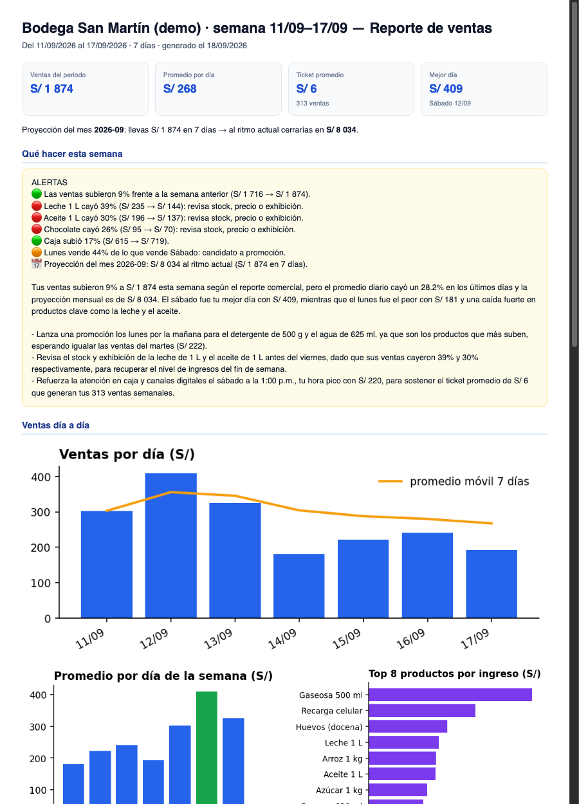

Me mandas el reporte que ya usas (caja, Rappi, PedidosYa o Yape). El lunes recibes por WhatsApp una hoja clara: ventas por canal, platos que caen, horas fuertes y 3 decisiones para vender mejor esa semana. Si quieres, sumas un QR en la mesa para que tus clientes te califiquen y tu carta digital con pedidos directo a tu WhatsApp. Sin instalar sistema, sin darme las claves de tu caja ni de tus apps, sin contrato. Pagas por Yape o Plin.
Ver todo y activarlo Ver un resumen de ejemplo (PDF)Cada módulo funciona solo. Juntos se potencian: las ventas te dicen qué pasó, las opiniones te dicen por qué, y la carta te trae más pedidos.
Me mandas el Excel de tu caja o el archivo que exportas de Rappi, PedidosYa o Yape. Cada lunes, un PDF por WhatsApp.
Un cartel con QR en la mesa o en la caja. El cliente califica en 30 segundos desde su celular. Cada mes recibes el informe: notas, comentarios y qué mejorar primero.
Tu carta en una página con un QR que no cambia nunca. El cliente elige, suma y el pedido le llega a tu WhatsApp ya escrito. Tú mismo cambias precios o fotos y marcas un plato agotado desde tu celular, o me lo pides por WhatsApp.
Llenas una vez el costo de cada plato. Cada mes te digo cuánto deja cada uno y qué hacer: subir precio, promocionar, mantener o retirar.
Es como tener una persona más contestando el teléfono de tu local: cuando tu línea está ocupada o nadie alcanza a contestar, un asistente virtual atiende, toma el pedido con tu carta, lo lee de vuelta con el total y te lo manda a una pantalla y a tu WhatsApp con la grabación. Tu número no cambia.
Restaurante pequeño: hasta ~40 pedidos al día o un solo local. Restaurante con mucha gente: más de 40 pedidos al día, varios canales o 2+ locales.
Precio normal S/ 169/mes. Por separado costaría S/ 187/mes + S/ 228 de instalación.
Precio normal S/ 249/mes. Por separado costaría S/ 267/mes + S/ 228 de instalación.
No hace falta un sistema. Tres caminos, del más simple al más completo:
Si llevas cuaderno, me mandas una foto diaria o semanal y yo la paso a números. Con eso alcanza para el primer resumen.
Si prefieres ordenarlo desde el inicio, te doy una hoja simple (Excel o Google Sheets): fecha, producto, cantidad, precio. Primero ordenamos lo mínimo necesario; nadie tiene que registrar una venta extra en hora punta.
PedidosYa Partners exporta a Excel; Rappi Partners descarga la relación de ventas; Yape Empresa tiene reporte de ventas. Si tienes caja (Rest.pe, Bsale, Toteat, Fudo), exportan a Excel.
